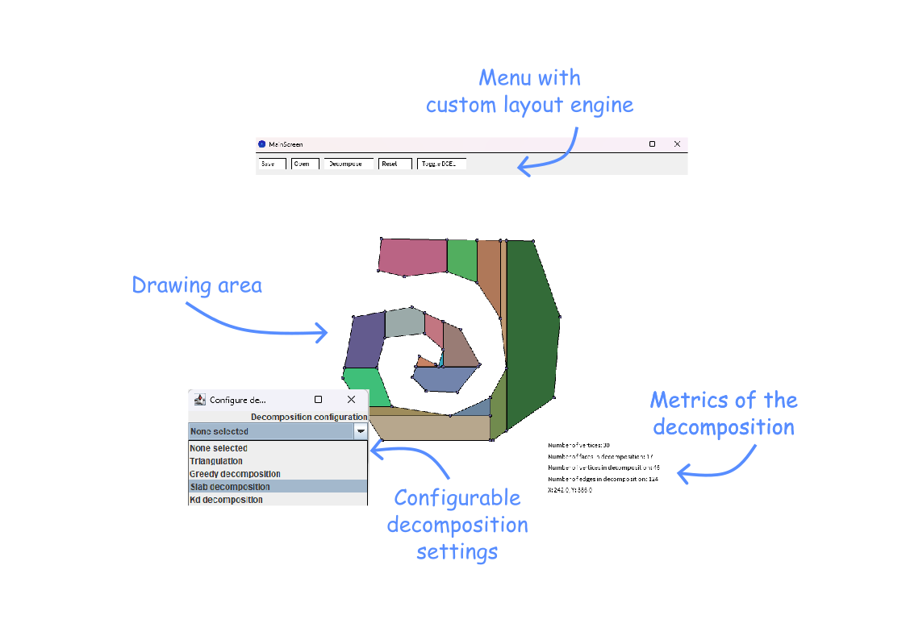

The goal of the project is to explore different algorithms for decomposing a simple polygon into convex subcomponents. For this project five different algorithms are attempted. For this, multiple stategies are examined. The first stategy is of not adding any extra points (called Steiner points). The algorithms that are attempted with this are simple triangulation and greedy decomposition. The second strategy is to allow adding adding extra points to ease the decomposition. For this, the Chazelle algorithm, slab decomposition and KD decomposition are going to be implemented.
To better be able to compare the performance of the different algorithms, a Minkovski sums algorithm will be implemented where its first step is to decompose the polygons on which the sum will be calculated. Reducing the amount of decomposition components will here result generally in better performance.
Here now follows a more thorough description of the different components of the application and its implemented algorithms.
Our implementation of triangulation is based on the linesweep algorithms seen in the course. The first part is to split a simple polygon into multiple Y-monotone polygons by adding carefuly choosen edges. The doubly connected edge list structure has been implemented to easily add edges and provide efficient way to represent the newly created polygons. At the end of the first part, the border of each face in the DCEL is a y-monotone polygon. Here is an example of result of our application at this stage:
Then the second part is spliting these polygons into triangles by using another linesweep algorithm with a stack. The result for the same polygon looks like this:

This decomposition uses the triangulation algorithm but stop as soon as there is no more reflex vertex in the polygon. To be done.
The slab decomposition algorithm is described in
The way this algorithm is implemented is by taking a polygon, categorising all vertices of this simple polygon into the following categories: start, end, split, join, reflex point and other points. This information is then used in a sweepline algorithm that travels perpendicular to the initial direction over the field with the vertices as its events. This is done to maintain a list of edges above and below a certain point, so only a limited amount of edges need to be tested for intersection. Once an edge above/below a reflex point has been found, a cut will be made along the initialy chosen direction.
For this algorithm, all events are used to update the sweepline structure, and maintain an ordered list of all edges currently intersecting with the sweepline. The vertices considered reflex points are the vertices that are classified as either a split, a join or a reflex point.

To be done.
To be done.
The GUI is made with Processing in Java for the drawing and interactive part and uses Swing for all other menus. It contains a custom layout engine to position dynamically the buttons in the menu and displays metrics about a certain decomposition.
For easy testing and experimenting, it is possible to save and reopen a polygon. Saving is done by storing the points of the polygon into a custom file format. Doing this allows to experiment with different types of polygons in an automated testing bed.
Currently the explain button does not yet work.
